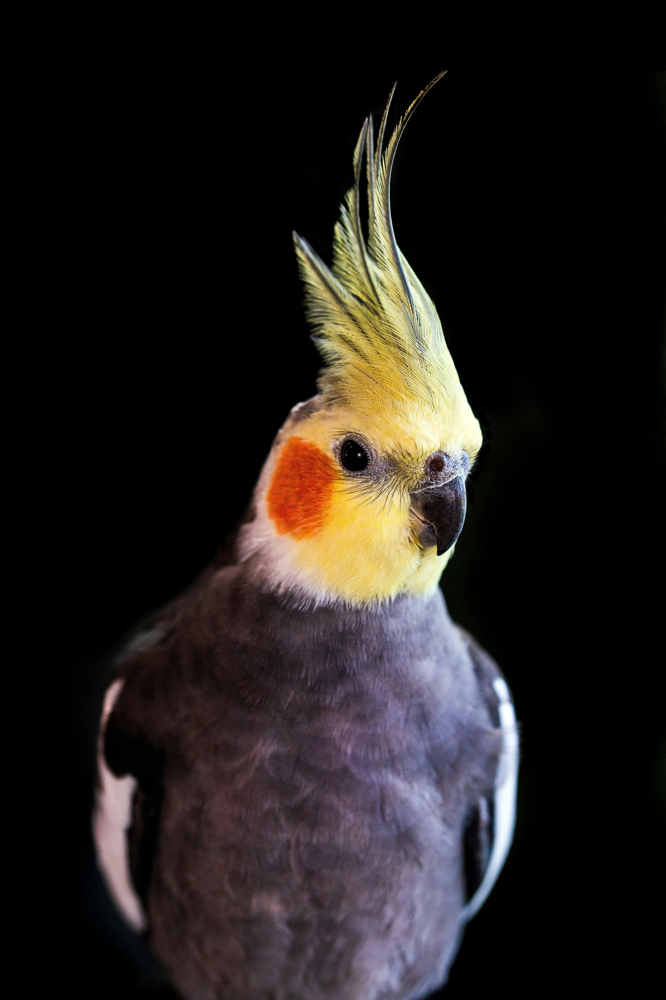
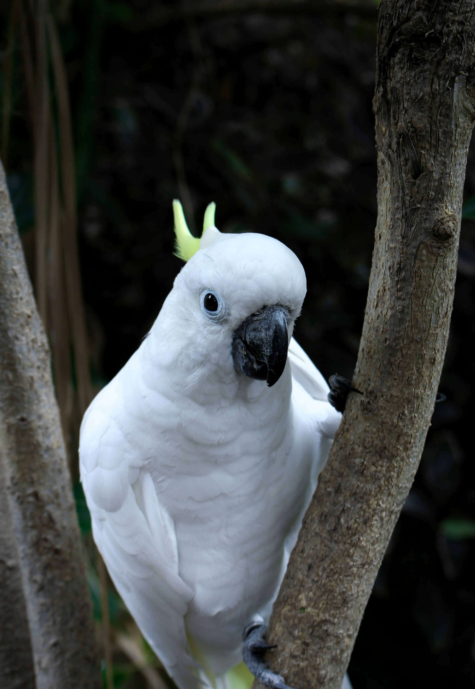

Wild budgerigars average 18cm (7in) long, weigh 30–40 grams (1.1–1.4oz),
30cm (12in) in wingspan, and display a light green body colour (abdomen and
rumps), while their mantles (back and wing coverts) display pitch-black mantle
markings (blackish in fledglings and immatures) edged in clear yellow
undulations. The forehead and face is yellow in adults.
Prior to their adult plumage, young individuals have blackish stripes down to
the cere (the area containing the nostrils) in young individuals until around
3–4 months of age. They display small, iridescent blue-violet cheek patches
and a series of three black spots across each side of their throats (called throat
patches). The two outermost throat spots are situated at the base of each cheek
patch. The tail is cobalt (dark-blue); and outside tail feathers display central
yellow flashes. Their wings have greenish-black flight feathers and black
coverts with yellow fringes along with central yellow flashes, which only become
visible in flight or when the wings are outstretched. Bills are olive grey and legs
blueish-grey, with zygodactyl toes.
In their natural Australian habitat, budgerigars are noticeably smaller than those in
captivity. This particular parrot species has been bred in many other colours and
shades in captivity (e.g. blue, grey, grey-green, pieds, violet, white, yellow-blue). Pet
store individuals will commonly be blue, green, or yellow. Like most parrot species,
budgerigar plumage fluoresces under ultraviolet light – a phenomenon possibly related
to courtship and mate selection.
The upper half of their beaks is taller than the bottom half, covering the bottom when closed.
The beak does not protrude much, due to the thick, fluffy feathers surrounding it, giving the
appearance of a downward-pointing beak that lies flat against the face. The upper half acts as
a long, smooth cover, while the bottom half is just about a half-sized cup-piece. These beaks
allow the birds to eat plants, fruits, and vegetables.
The colour of the cere differs between the sexes, being a lavender/baby blue in males, pale
brownish/white (non breeding) to brown (breeding) in females, and pink in immature birds
of both sexes (usually of a more even purplish-pink colour in young males). Some female
budgerigars develop a brown cere only during breeding time, which later returns to the normal
colour. Young females can often be identified by a subtle, chalky whiteness that starts around
the nostrils. Males that are either albino, lutino, dark-eyed clear or recessive pied (Danish
pied or harlequin) retain the immature purplish-pink cere colour for their entire lives.
Behaviours and head shape also help indicate sex. Veterinarians can determine the
sex of a bird by invasive examination or samples of blood, feather, or eggshell.
Mature males usually have a cere of light to dark blue, but in some particular
colour mutations it can be periwinkle, lavender, purplish or pink – including dark-eyed clears,
Danish pieds (recessive pieds) and inos, which usually display much rounder heads. The behaviour
of males can distinguish them from females. Males are typically cheerful, extroverted, highly
flirtatious, peacefully social, and very vocal.
Female ceres are pinkish-while immature. As they age, they move from being
beigeish or whitish outside breeding condition into brown (often with a 'crusty' texture) in
breeding condition and usually display flattened backs of heads (right above the nape). Females
are more dominant and less socially tolerant. This behavior is more pronounced around other
females than with males.
Budgerigars have
tetrachromatic
colour vision, although all four classes of cone cells will not
operate simultaneously unless under sunlight or a UV lamp. The ultraviolet spectrum brightens their
feathers to attract mates. The throat spots in budgerigars reflect UV and can be used to distinguish
individual birds. While ultraviolet light is essential to the good health of caged and pet birds,
inadequate darkness or rest results in overstimulation.
.jpg) |
.jpg) |
.jpg) |
.jpg) |
.jpg) |
| African Grey | Cockatiel | Cockatoo | Macaw | Indian Ringneck |
|---|---|---|---|---|

|
 |  |

|

|